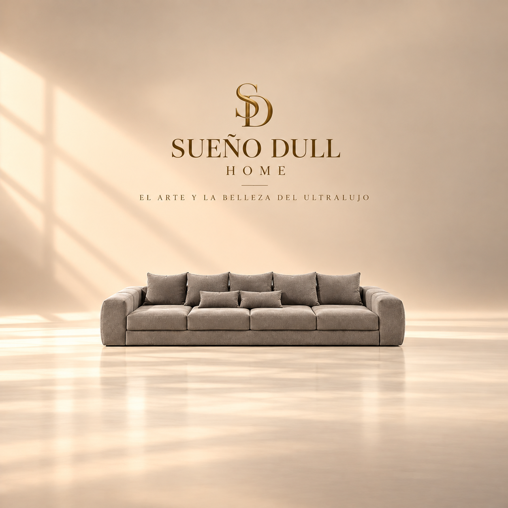
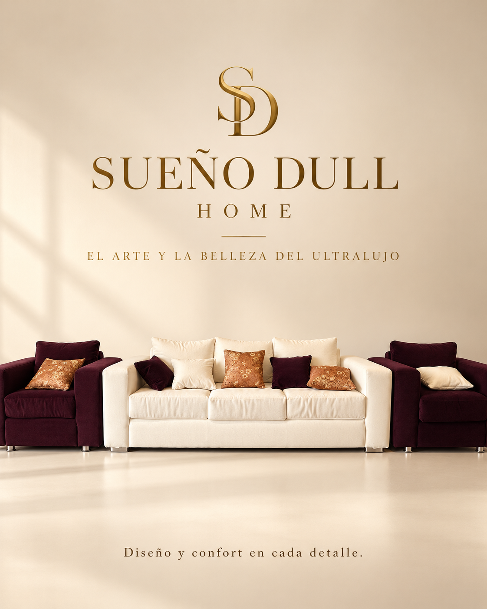
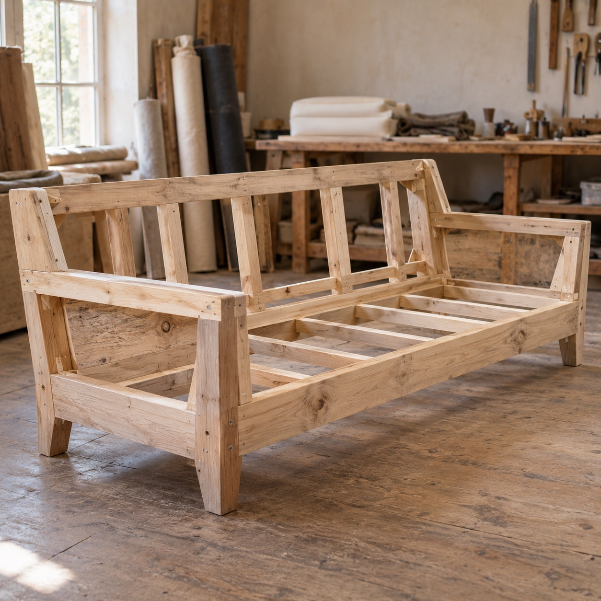
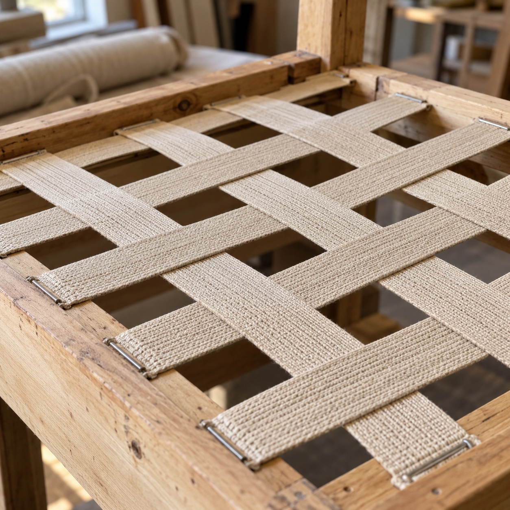
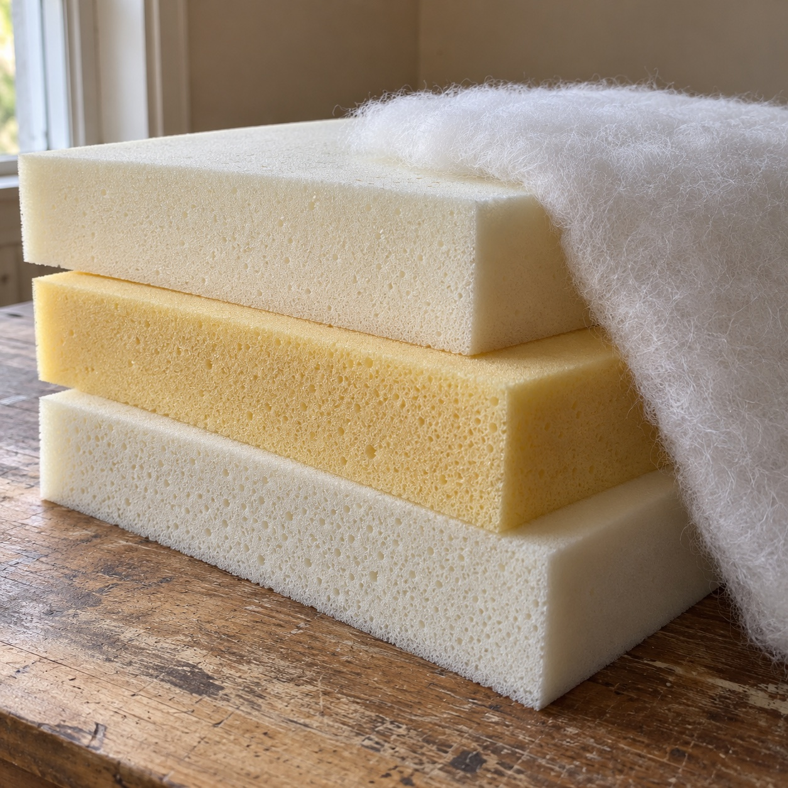
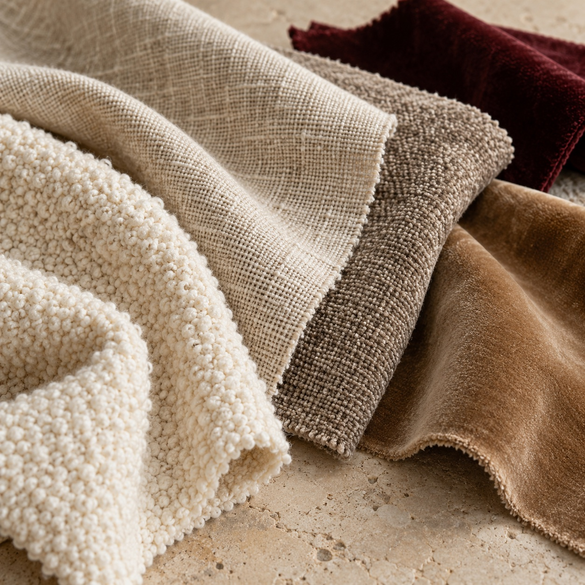
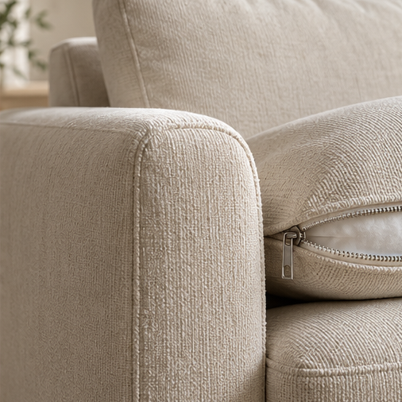

LIVING / TONOS CÁLIDOS
LIVING & DESCANSO
El arte de
sentirse en casa.
Texturas que abrazan. Formas que invitan a quedarse. Descubrí una manera más bella de habitar tus espacios.
Explorar la colección ↗Diseñá tu sofá a medida ↗DISEÑO QUE SE SIENTE.01 — 03

EL CONFORT, HECHO ARTE↓
Diseño atemporal✧Confort en cada detalle✧Una nueva forma de habitar
PIEZAS PARA VIVIRLAS
Tu espacio.
Tu manera de sentir.
Una selección donde la calidez y la elegancia encuentran su lugar. Elegí el ambiente que querés transformar.
01
LIVING / CONTRASTES
Un encuentro en armonía
DESCANSO / SERENIDAD
Tu pausa más especial
DESCANSO / RESPALDO TAPIZADO
Descanso con carácter
DESCANSO / SOMMIER
La calidez del descanso

SUEÑO DULL HOME
El arte y la belleza
del ultralujo.
Creemos que un sofá es mucho más que una pieza de mobiliario. Es el lugar donde el diseño, la comodidad y la personalidad de cada hogar se encuentran.
En Sueño Dull Home nos especializamos en la fabricación de sofás exclusivos y personalizados, creados cuidadosamente según las necesidades, dimensiones y preferencias de cada cliente.
Desde la selección de materiales hasta los últimos detalles del tapizado, cada pieza refleja nuestro compromiso con la elegancia, la calidad y el confort.
No se trata simplemente de elegir un sofá. Se trata de crear uno que sea verdaderamente tuyo.
Descubrí nuestras colecciones y permitinos acompañarte en la creación de tu próximo espacio.
Sueño Dull Home — Diseño y confort en cada detalle.
Descubrí nuestras colecciones ↗CALIDAD, SERVICIO Y CONFIANZA
El respaldo que tu
espacio merece.
Fabricamos, renovamos y proveemos soluciones para hogares y espacios comerciales. Contanos tu proyecto y solicitanos un presupuesto sin compromiso.
NUESTRO COMPROMISO CON VOS
Calidad en cada pieza.
Atención en cada detalle.
Fabricamos con materiales seleccionados y cuidamos cada etapa: la estructura, el confort, el tapizado y las terminaciones. Te acompañamos para definir una solución acorde a tu espacio y tus necesidades.
Garantía y respaldo
Consultá la garantía de nuestros productos y servicios. Te informamos el alcance, las condiciones y los cuidados correspondientes a cada trabajo al preparar tu propuesta.
Fabricación y provisión
Desarrollamos piezas personalizadas y atendemos consultas de provisión para proyectos residenciales y comerciales. Contactanos para evaluar productos, cantidades y condiciones.
Reparación y renovación
También reparamos colchones y juegos de living. Enviános fotos y contanos qué necesitás renovar para evaluar el trabajo y preparar tu presupuesto.
SOLUCIONES PARA CADA PROYECTO
De tu hogar a grandes espacios.
Trabajamos con hoteles, moteles, restaurantes, casas residenciales y otros establecimientos. Para fabricación, reparación o provisión, conversemos sobre las necesidades de tu proyecto.
MATERIALES Y FABRICACIÓN
El arte de
crear confort.
La calidad se construye desde adentro. Conocé las decisiones que dan forma al soporte, la comodidad y la expresión de tu sofá.
Guía basada en nuestro Catálogo de Materiales. Las imágenes son ilustrativas; opciones, muestras y especificaciones se confirman para cada pedido durante el asesoramiento.
ANATOMÍA DE UN SOFÁ
Estructura
Es la base que sostiene el conjunto. En Sueño Dull Home trabajamos con estructuras de madera: el diseño del armado, las uniones y los refuerzos forman parte de la planificación de cada pieza.
Conversemos sobre tu diseño ↗


Imágenes de referencia generadas con IA para explicar los materiales. No son fotografías de nuestro taller ni especificaciones de un pedido.
Estructuras de madera 01
La solidez depende del material y de cómo se combinan uniones, apoyos y refuerzos. La estructura se define según las medidas y el uso previsto.
- Madera maciza seca
- Puede emplearse en elementos portantes. El secado, la selección y las uniones son parte del armado.
- Multilaminado
- Tablero de chapas superpuestas, útil en paneles y componentes según su calidad y espesor.
- MDF y aglomerado
- Tableros con características diferentes. Su uso en piezas auxiliares debe evaluarse según las cargas y la humedad; no son intercambiables con cualquier elemento portante.
Suspensión y soporte 02
- Cinchas elásticas
- Bandas tensadas que aportan soporte flexible. Su disposición y tensión influyen en la respuesta del asiento.
- Resortes zigzag
- Elementos elásticos colocados sobre el marco de madera. Trabajan con las espumas para sostener el asiento.
- Bases rígidas
- Aportan un apoyo menos flexible; la sensación final depende de las capas que se colocan encima.
La suspensión se selecciona para cada diseño. Una estructura de madera puede incorporar elementos de suspensión metálicos.
Espumas y capas de confort 03
- Poliuretano
- Familia de espumas con distintas respuestas, utilizada en asientos, respaldos y apoyos.
- Alta resiliencia (HR)
- Espuma diseñada para ofrecer elasticidad y recuperación. La sensación debe evaluarse con la ficha de cada opción.
- Soft y capas de confort
- Capas más suaves que pueden acompañar un núcleo de soporte. La combinación define el recibimiento del asiento.
La densidad expresa masa por volumen; no equivale por sí sola a firmeza. El espesor, la firmeza y la recuperación también influyen en cómo se siente el sofá. Confirmamos la composición de cada propuesta.
Para conocer más sobre densidad y firmeza: Polyurethane Foam Association.
Rellenos, volumen y suavidad 04
- Guata de poliéster
- Acompaña las capas y suaviza el contacto y los contornos.
- Fibra siliconada
- Puede utilizarse en almohadones y respaldos para una sensación mullida. Puede requerir redistribución periódica.
- Plumas y mezclas
- Alternativas de tacto suave cuyo mantenimiento y composición deben revisarse antes de elegir. Su disponibilidad se consulta por pedido.
Terminaciones que completan la pieza 05
Costuras alineadas, encuentros del tapizado, cierres, apoyos y patas contribuyen al resultado final. Revisamos qué terminaciones acompañan el diseño elegido.
Consultá si el modelo admite fundas desmontables. Una funda removible no implica que pueda lavarse en máquina: siempre se sigue la indicación del tejido.
Solicitá fotos de terminaciones ↗LA COMODIDAD ES PERSONAL
¿Cómo te gusta sentir tu sofá?
Una sensación intermedia entre soporte y suavidad. La combinación se ajusta durante el asesoramiento.
BIBLIOTECA DE TAPIZADOS
Texturas con
personalidad.
Explorá las familias de tapizados. Solicitá muestras reales para evaluar el tacto, la composición y el color con la luz de tu ambiente.

LA BELLEZA DEL TACTO
Elegir también
es sentir.
Una trama, un relieve, un reflejo de luz. Explorá las familias de tapizados y luego compará muestras físicas para definir tu elección.
Imagen de referencia generada con IA. Las texturas y colores disponibles se confirman con muestras reales.
Descargar catálogo de materiales ↗Encontrá la tela que acompaña tu vida.
Consultá composición, resistencia al uso y mantenimiento de la muestra concreta. El nombre de una tela no define por sí solo su desempeño.
DE LA IDEA A TU HOGAR
Una pieza tuya.
Paso a paso.
Asesoramiento y diseño
Conversamos sobre tu estilo, tus hábitos y lo que esperás de tu sofá.
Medidas y planificación
Revisamos el espacio, las proporciones y los accesos para la entrega.
Selección de materiales
Definimos estructura, confort, tapizado y terminaciones con las opciones disponibles.
Fabricación
El diseño toma forma a través de la estructura de madera, los rellenos y el tapizado.
Terminación y revisión
Revisamos el armado, las costuras y los detalles acordados para la pieza.
Coordinación de entrega
Acordamos los detalles de entrega según el pedido y su ubicación.
PERSONALIZÁ TU SOFÁ
El diseño empieza
con vos.
Prepará tu idea y compartila por WhatsApp para solicitar presupuesto. Las combinaciones se evalúan según la viabilidad del modelo y la disponibilidad.
Visualización esquemática orientativa. El diseño, las muestras de color y los acabados se confirman con el equipo.

LA DIFERENCIA ESTÁ EN EL DETALLE
Un acabado que
completa el diseño.
Costuras, cierres y encuentros de tela forman parte del carácter de cada pieza. El lienzo interior separa las capas y el cubrepolvo cierra la parte inferior.
La ubicación de las patas, los apoyos y sus fijaciones se planifica junto con el conjunto. Consultá las terminaciones y las fundas disponibles para tu modelo.
Elegí tus terminaciones ↗BELLEZA QUE SE CUIDA
Disfrutalo.
Cuidá cada detalle.
Limpieza habitual
Retirá el polvo con un método adecuado al tapizado. Seguí siempre las indicaciones del proveedor de la tela.
Ante un derrame
Absorbé sin frotar con un paño limpio. Antes de aplicar un producto, consultá la ficha y probá en una zona poco visible.
Luz y humedad
Evitá la exposición solar directa prolongada y mantené el ambiente ventilado, alejado de fuentes de humedad.
Almohadones y fundas
Redistribuí los rellenos y rotá los almohadones cuando el modelo lo permita. Consultá el lavado específico de cada funda.
ASESORAMIENTO ESPECIALIZADO
Reservá un momento
para tu proyecto.
Elegí una fecha y una franja horaria para conversar sobre tus medidas, materiales y estilo. Te responderemos por WhatsApp para coordinar la cita.
La solicitud está sujeta a confirmación del equipo. No representa una reserva automática.
SUEÑO DULL HOME
El lujo comienza cuando
todo está hecho para vos.
En Sueño Dull Home creemos que cada espacio merece una pieza única. Te acompañamos desde la elección del diseño hasta los últimos detalles, combinando estética, comodidad y funcionalidad.
EL PRÓXIMO CAPÍTULO ES TUYO
Imaginá tu espacio.
Empezá por lo que te inspira.
Elegí un ambiente y prepará una selección con tus preferencias.